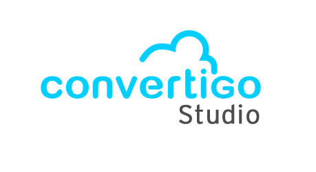

Test API

Le projet complet consistait à refaire une application mobile dans un language connue des developpeurs principaux de l'entreprise pour pouvoir dans le futur faire des mise à jour et maintenance. Grâce aux API déjà codées et à une application de low cade nomée "Convertigo", notre mission consistait à tester depuis Convertigo tout les chemins de l'API, en créant des méthodes pour chaque chemin.